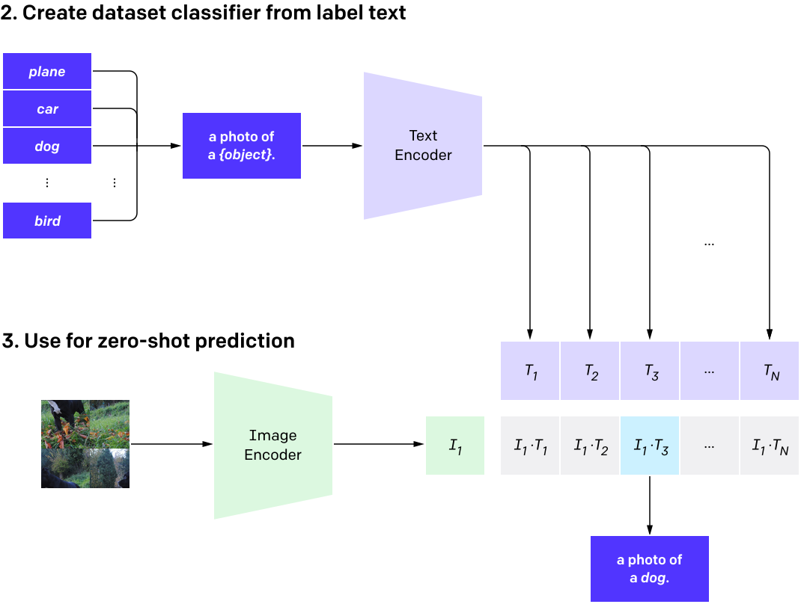

Excalibur: efficiënt en interactief zoeken in grote hoeveelheden afbeeldingen
Digitober
Mark Berger, Ronald van Velzen, Robin Bakker, Niels Dekker
12-09-2022
Agenda van de dag
- Introductie sprekers & CoDE ü뮂Äçüíª
- Waarom zoeken in afbeeldingen? üîç
-
Excalibur üó°Ô∏è
- Hoe werkt zoeken eigenlijk? üßê
- Wat zit er onder de kap bij Excalibur? ü§ì
- Demo! ü§©
- Volgende stappen ü¶ø
- Tijd voor vragen ❓
- Zelf aan de gang met Excalibur! üë©‚Äçüî¨
Wie zijn wij?
Mark Berger

- Bachelor Kunstmatige Intelligentie @ Universiteit Utrecht
- Master Information Systems @ Universiteit van Amsterdam
- Sinds 2018 bij de FIOD als Data Scientist / ML engineer
- Eerst project DGO, en nu CoDE
- Geinteresseerd in slim zoeken, generatieve AI, en interactieve systemen
Ronald van Velzen

CoDE staat voorC
entero
fD
ataE
xpertise. We ontwikkelen applicaties die het werk van de rechercheurmakkelijker
moeten maken.
Onze doelstellingen zijn daarbij: gebruiknieuwe algoritmes en technologieen
omdata te reduceren
,te verrijken
, en om te zetten naar eenhandig formaat
.
Zoeken in afbeeldingen
Ongestructureerde data domineert

Ongestructureerde data domineert
1.72 triljoen per jaar
4.7 miljard per dag
6.9 miljard verstuurd per dag
Opslag
Een gemiddeld telefoon kan anno 2022 rond de
35.500 foto's
opslaan.
Volgens een onderzoek, hebben mensen in 2022 gemiddeld
2.400 foto's
op hun iPhone staan.*
Echter zijn deze getallen misleidend: de forensische images van de telefoons die wij afnemen hebben veel meer afbeeldingen. Dit komt door allerlei systeem afbeeldingen en icoontjes die op zo'n device kunnen schuilen. Ervaring vertelt dat we het makkelijk over
50.000+ afbeeldingen
per device kunnen praten...
* https://photutorial.com/photos-statistics/
Data reductie
is essentieel. Wij willen een systeem hebben die100.000
te bekijken afbeeldingen reduceert tot100
te bekijken afbeeldingen.
Zo komt een rechercheur of analyst snel toe aan de data die er toe doet.
Excalibur
Excalibur is een zoeksysteem
WolframAlpha
Text doorzoeken
üîç Geparkeerde blauwe auto
| Zoekresultaat | Overeenkomst |
|---|---|
| "Blauwe auto" | 93% |
| "Geparkeerde auto" | 90% |
| "Auto in de straat" | 79% |
| "Parkeergarage met auto's" | 79% |

"bag-of-words"
"vector"
Text doorzoeken: advanced
"Deze blauwe auto staat geparkeerd"
Neuraal netwerk

Deze ➜
blauwe ➜
auto ➜
staat ➜
geparkeerd ➜
0.78
0.06
-0.98
0.46
0.12
-0.04
0.24
0.57
-0.13
0.42
0.37
0.10
-0.69
-0.22
0.86
üöô
üöó
üèéÔ∏è
✅
Neuraal netwerk in actie
Vector representaties
Afbeeldingen doorzoeken met tekst
Groene sportauto rijdt op het circuit
CLIP model: plaatjes en tekst bij elkaar

CLIP model: afbeeldingen en tekst bij elkaar
Maar ook afbeeldingen zoeken met afbeeldingen!
En nu wil ik het zien werken!
Excalibur, een overzicht
- Realiteit: meer data in een zaak dan een rechercheur effectief kan analyseren
- Huidige tools (bijvoorbeeld Cellebrite) hebben limitaties op het gebied van zoeken in foto's
- Gelimiteerd aan vooraf gedefinieerde categorieën om in te zoeken
- Zoeken met zowel natuurlijke taal als met afbeeldingen
- Mogelijkheid om de zoekresultaten te verfijnen met interactive learning
Wat zijn de volgende stappen?
- Excalibur is een vrij zware applicatie --> niet makkelijk om breed te deployen
- Het plan: Excalibur beschikbaar maken op standalone machines in verschillende regios
- Jullie input :)
Dank voor jullie
tijd
tijd
voor vragen!
Zelf aan de gang met Excalibur